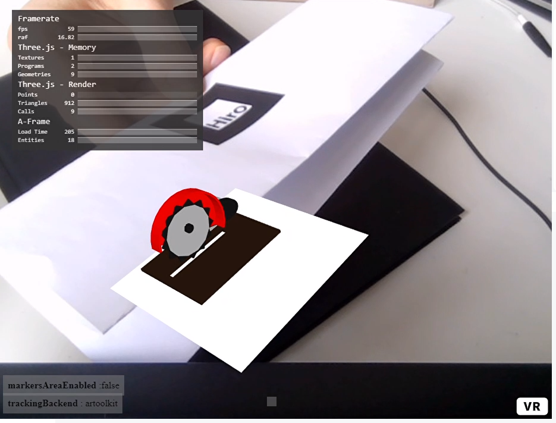
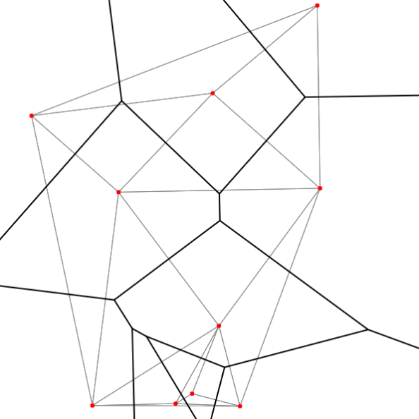

Here are my js Projects to view

This is is an Argumented Reality Experiment for testing
Three.js, AR, JS, AFRAME

This Calls Cellsimulation based on Voronoy Cells as well as standard Cell Grid
Game of Life, Typescript

This is a simple Gantt Chart visualization with random colors, based on Golden Ratio
Gantt, Golden Ratio